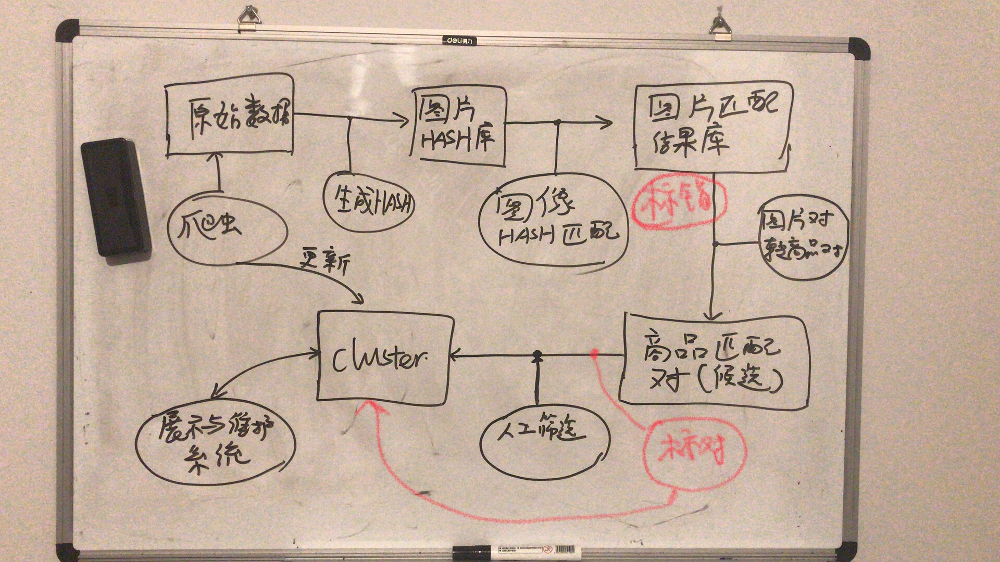

可以使用opencv的sift算法库
也可以参考http://www.vlfeat.org/overview/sift.html
sift算法用法很简单：
计算两张图片的sift关键点，然后计算匹配上的关键点。
所以这有两个特征，匹配率：匹配的关键点数／两个图片中关键点数量比较小的关键点数、匹配的关键点数
把之前人工标记的数据当作训练数据，来寻找合适的阈值：
对于标错机器人，那就是100%匹配错误的阈值；
对于标对机器人，那就是100%匹配正确的阈值；
对于标对机器人，那就是100%匹配正确的阈值；
自动匹配机器人综述自动匹配机器人分为标错机器人和标对机器人两个，使用的基础算法均为sift算法。
从环节上来说，标错位于图片对转匹配对的上游，标对位于人工筛选的上游：

标错机器人的目的：去除那些hash匹配中确定匹配错误的图片
标对机器人的目的：把根据hash匹配算出来候选匹配商品中绝对匹配的挑选出来，跳过人工匹配，并且，对于剩下的需要人工匹配的进行相似度排序，降低人工匹配工作量（基本上拍序高的都80%匹配，所以人工匹配的列表一屏幕默认直接标记为匹配，人工只要挑选出不匹配的即可）；